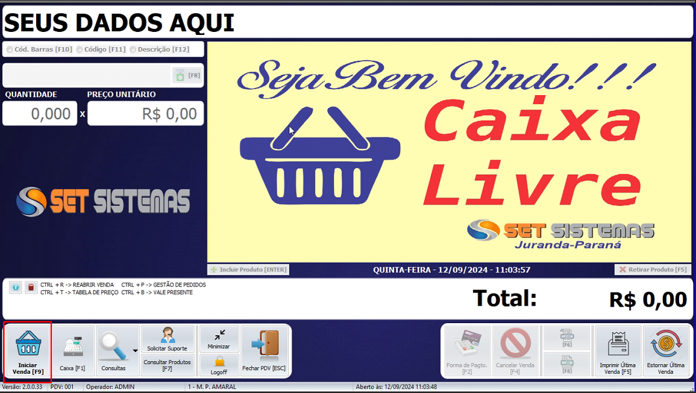

Introdução
Para fazer uma venda no frente de caixa no seu computador será necessário apertar a tecla [F9] ou selecionar em iniciar venda
Nessa tela temos a opção por código de barras[F10] , código[F11] ou descrição[F12], na qual serve para você localizar seu produto cadastrado no Set Sistemas(retaguarda).
Ao selecionar o produto, basta dar um ok.
Após selecionar o produto, é possível colocar a quantidade a ser vendida e também o valor de venda do produto.
Após colocado a quantidade e o valor, e verificado, é hora de selecionar a forma de pagamento[F12]
Na tela de pagamentos é possível selecionar o cliente clicando na lupa ou apertando a tecla[F7] no teclado.
Após selecionar a forma de pagamento do cliente, aperte vá em concluir
venda[F3].
Com isso você conclui sua venda no frente de caixa.